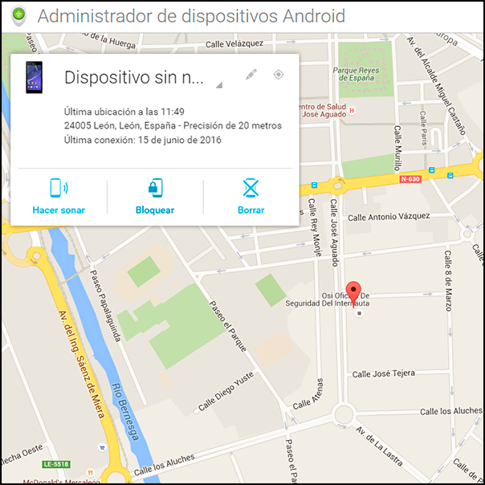
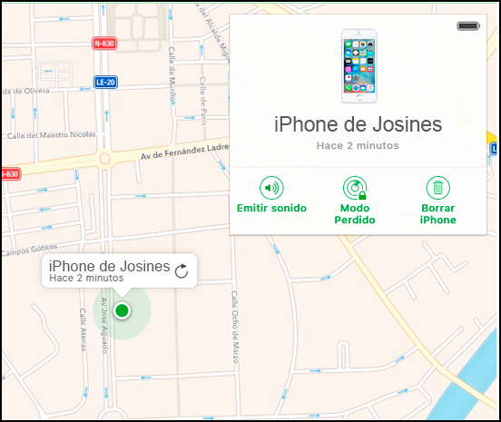

A continuación, te facilitamos información sobre las opciones de seguridad de algunas de las redes sociales más utilizadas así como una opción muy interesante que incorporan todos los dispositivos móviles.
- Opciones de seguridad en servicios Google
Debemos ser conscientes que Google alberga otras funcionalidades de gran importancia como YouTube, Google Fotos, Google Plus, Drive, Analytics, etc., muy extendidas entre la comunidad internauta.
A través de “Mi cuenta” de Google puedes gestionar tus datos y seguridad y configurar opciones tales como opciones de recuperación de contraseña, verificación en dos pasos o administración de cuentas. Incluso puedes hacer una revisión de seguridad y comprobar si existe algún tipo de problema en tu cuenta.
Para más información, puedes consultar la sección de seguridad de Google.
- Opciones de seguridad en Facebook
En el siguiente vídeo te explicamos las opciones de seguridad de Facebook y cómo configurarlas.
Vídeo: Privacidad y seguridad en Facebook
Fuente: Agencia Española de Protección de Datos (AEPD) y OSI-INCIBE.
- Habilitar la opción de «Encontrar mi dispositivo»
En el caso de que perdamos nuestro dispositivo móvil o que un ladrón nos lo robe, tanto Google como Apple cuentan con sus propias aplicaciones que permiten geolocalizar el terminal, enviar una notificación, bloquearlo y en el peor de los casos borrar toda la información restableciendo los parámetros de fábrica.
-> Android
El administrador de dispositivos Android permite gestionar todos los dispositivos vinculados a una cuenta de Gmail. Para acceder a la herramienta es necesario identificarse con las credenciales de la cuenta que está vinculada al dispositivo.

Localizador de dispositivos en Android
Con esta herramienta Google nos permite:
- Obtener la ubicación del dispositivo siempre que el GPS este habilitado en el dispositivo.
- Fecha de la última conexión.
- Hacer sonar el dispositivo a todo volumen durante cinco minutos.
- Bloquear. Activando esta opción, el dispositivo se bloqueará y en caso de que no tenga un bloqueo de pantalla, se bloqueará con la contraseña que hayas escrito desde el administrador de dispositivos Android. Además, se podrá redactar un mensaje para que la persona que lo haya encontrado sepa qué hacer con él o indicar un número de teléfono al que llamar.
- Borrar el terminal. Se restablecerán los ajustes de fábrica y se borrará toda la información almacenada en el dispositivo. Una vez ha comenzado el borrado, este proceso no puede cancelarse. Si no existe conexión a Internet, el borrado se producirá la próxima vez que el dispositivo esté conectado a la red.
-> iOS: la herramienta de Apple que permite tener controlados los dispositivos vinculados a una determinada cuenta se conoce como "Buscar mi iPhone”. Para utilizar esta aplicación, es necesario acceder a la cuenta de iCloud o utilizar la aplicación Buscar mi iPhone en otro dispositivo.

Localizador de dispositivos en iOS
Con esta herramienta se pueden llevar a cabo acciones similares a las de Android, como por ejemplo:
- Saber dónde está el dispositivo y dónde ha estado.
- Obtener su ubicación, siempre y cuando el GPS esté activo.
- Bloquear el dispositivo para que no pueda ser usado a no ser que se conozca la contraseña de desbloqueo. También permite mostrar un mensaje en un teléfono de contacto.
- Borrado a distancia. Elimina toda la información del dispositivo restableciendo su configuración a los ajustes de fábrica. El mensaje y el teléfono de contacto seguirá mostrándose por pantalla.
Para prevenirnos ante un posible caso de robo o pérdida de terminal, debemos seguir las siguientes recomendaciones:
- Únicamente tener el dispositivo en la mano mientras se esté utilizando.
- Llevar el dispositivo con nosotros, en algún bolsillo o lugar “seguro”.
- No dejarlo nunca al alcance de terceros, por ejemplo sobre mesas o mostradores.
- Si llevamos el móvil en un bolso o maletín de portátil, tener especial cuidado. En caso de robo, sería un dos por uno.
- Activar o instalar algún servicio o aplicación antirrobo, para la localización física del dispositivo.